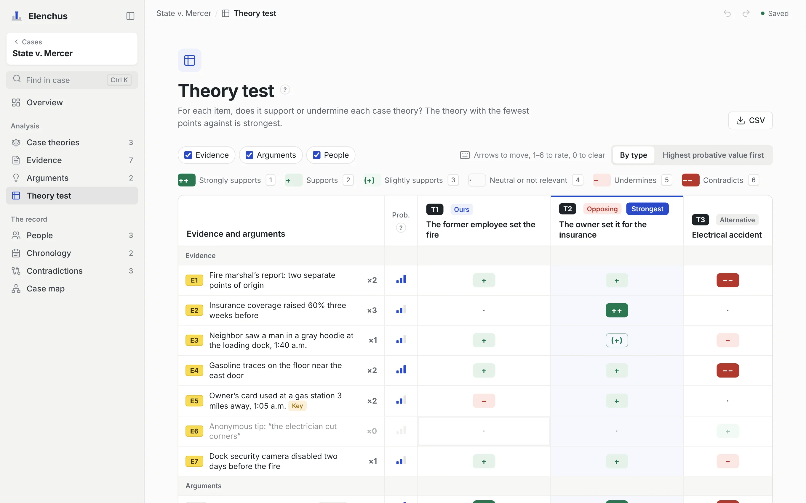
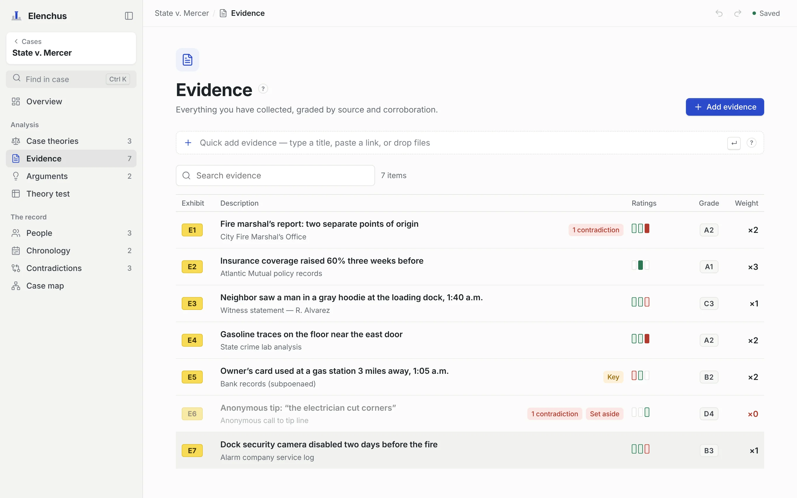
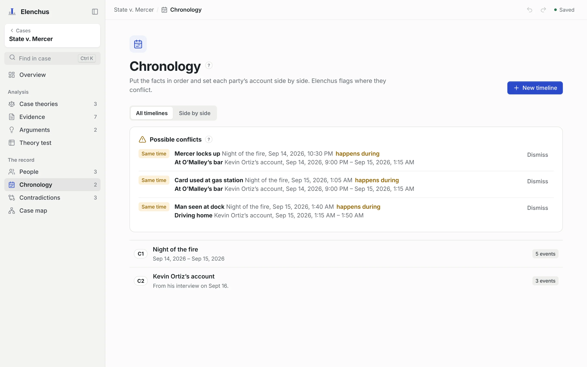

In the matter of your next trial
Find the theory of the case the evidence actually supports.
Elenchus is case-analysis software for trial lawyers. Grade every piece of evidence, rate it against your theory and the other side’s, and see which account the record can carry while there’s still time to act on it.
Mac and WindowsFiles stay on your computerFree for your first case
Every lawyer believes their own theory. The record doesn’t.
Confirmation bias doesn’t stop at the courtroom door. Elenchus gives you a method against it: the analysis of competing hypotheses, used by intelligence analysts, rewritten in the language of litigation.
- State every theory. Yours, the other side’s, and any alternative a factfinder could believe. They can’t all be true, so the evidence has something to decide between.
- Grade the evidence. Rate each source from A to D and each piece of information from 1 to 4. The grade becomes a weight, so an anonymous tip never counts like a fire marshal’s report.1
- Rate it against every theory. Six marks, from strongly supports to contradicts, entered straight from the keyboard. Elenchus adds up what weighs against each theory and never counts the same fact twice.
- Read the result. The strongest theory is the one the record weighs least against, not the one with the most support. Elenchus names the pivotal evidence: the item that, if it fell, would change the outcome. That is what the other side will attack.2
- The grades follow the source-reliability and information-credibility scale long used to weigh intelligence reports. Key ideas
- Elenchus is an analysis tool and does not give legal advice. Its results are the arithmetic of the ratings and weights you enter; your judgment decides.
The whole case in one file you can reason about.
Theories, evidence, arguments, people and chronologies, linked to each other and to the attachments that prove them.



Case memo in Word
An editable .docx with the theories, the evidence and the analysis, ready for your team.
Case map
How people, exhibits and theories connect, on a map you can arrange.
Linked notes
Type @ to cite any exhibit, person or theory from anywhere in the case.
People
Parties, witnesses and experts, with notes, photos and their place in the theory test.
Keyboard first
Find anything with one shortcut, rate with number keys, undo every change.
Folders and search
Keep cases in folders and search inside all of them at once.
Nothing of yours on our servers. Nothing to subpoena.
Elenchus has no cloud and no account. Privileged material stays exactly where you put it.
Declaration on confidentiality
I, the developer of Elenchus, declare:
- Your cases are saved only on your computer, in Documents › Elenchus, as ordinary files you can back up, encrypt and move.
- Elenchus has no account, no analytics, no tracking and no advertising.
- The only connection Elenchus Pro makes is to confirm your license key. Your case files are never sent anywhere.
- The interface runs in a sandbox that blocks scripts hidden in imported files.
The details are in the Privacy Policy.
Free for your first case. Every feature included.
Pro removes the one-case limit when your practice needs it.
| Plan | Fee | Includes | Action |
|---|---|---|---|
| Free | $0No time limit | One active case, plus the sample case. Every feature, on Mac and Windows. | Download |
| Pro, monthly | $15per month | Unlimited cases on two of your computers, and email support from the developer. Cancel anytime. | Choose monthly |
| Pro, yearly Save 33% | $120per year, $10 a month | Everything in monthly, billed once a year. | Choose yearly |
Prices in US dollars; any tax is calculated at checkout. Orders are processed by Lemon Squeezy, our reseller and Merchant of Record. Subscriptions renew automatically and can be cancelled anytime. Payments are non-refundable, so please use the free plan to evaluate Elenchus first. See the Refund and Cancellation Policy.
Questions presented.
Whether Elenchus gives legal advice.
It doesn’t. Elenchus is an analysis tool. Its results are the arithmetic of the ratings and weights you enter, and your professional judgment always decides.
Whether you need to know the analysis of competing hypotheses.
No. Elenchus speaks the language of litigation: case theories, evidence, arguments and the theory test. A sample case and a short tour show you the method in a few minutes.
Where your cases are stored.
On your computer, in Documents › Elenchus. We never receive them. Back them up like any client file and turn on full-disk encryption (FileVault or BitLocker).
Why your computer asks for confirmation the first time.
Elenchus isn’t yet signed with paid Apple and Microsoft developer certificates, so your system asks you to confirm once. The install guide shows the extra click. Download Elenchus only from this site.
What happens to your cases if Pro ends.
Nothing is deleted. You can still open, read, print and export every case. If you have more than one active case, editing pauses until you renew or keep only one.
Whether Elenchus works offline.
Yes. No account or connection is needed to work. Elenchus Pro checks the license now and then, and keeps working for 30 days without a connection.
Wherefore, for the reasons stated, test your theory of the case before the other side tests it for you.